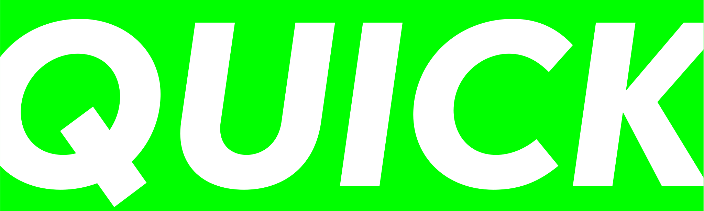
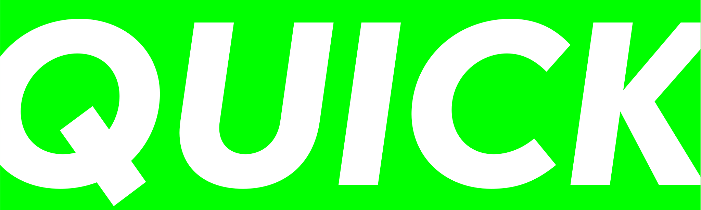

Process
I started working on Integra during my studies at UMPRUM. Redesign of the classic Futura with additional script style. This loosely related addition was originally designed much later after Renner's Futura, exactly by Edwin W. Shaar in 1954. This interesting, yet undiscovered curiosity fascinated me.

The Grotesque and Oblique styles were more closely following its original model. I change mainly the archaic look that Futura has, long ascenders, sometimes weird forms and some stroke endings that were given by limitations of printing techniques back then.
I made the Script styles more related to other family members. It is offering sort of alternative italic that works